La Historia De Druva Maharaja 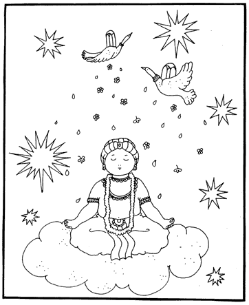 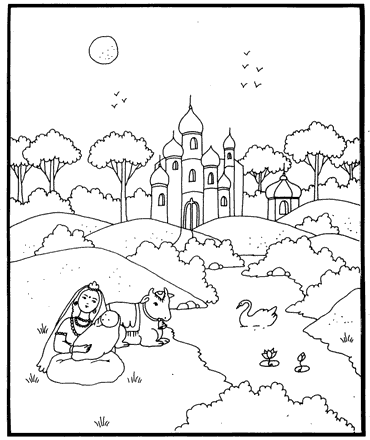 2) Hace muchos años atrás, cuando toda la tierra era un solo país llamado Bharata, nació el príncipe Dhruva, su padre fue el rey Uttanapad y su madre la reina Suniti. Suniti significa <<muy buena.>> Pero el rey Uttanapad tenía otra esposa llamada Suruci que por ser más seductora, la consideraba su preferida, con ella el rey tenía un hijo llamado Uttama. 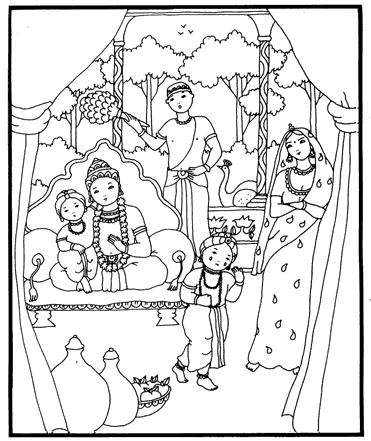 3) Una vez el niño Uttama estaba sentado en la falda de su padre, y al ver esto Dhruva quiso imitarlo y sentarse junto a su hermanastro, pero al rey no le gustó esta idea pues como dijimos, él prefería a su esposa Suruci. Ella también es molesto y le dijo muy enojada: Dhruva, tú no mereces ocupar ese lugar pues no naciste de mí, sólo Uttama puede sentarse en la falda del rey. Si deseas gozar de su mismo privilegio, debes primero complacer a Narayan, para que en un futuro nazcas de mi vientre. 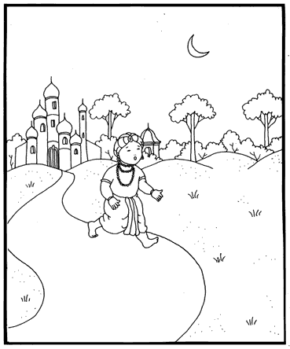 4) Druva se sintió mucho al oír estas palabras de su madrastra, y le molesto que su padre no hiciera nada para defenderlo. Así es que, temblando de ira se fue donde su madre, quien al escuchar su lamento y al verlo airado y lloroso le dijo: Mi querido hijo, no desees mal a nadie, pues si lo haces, tú sufrirás el mismo mal que has deseado. Es verdad además lo que Suruci dijo, pues por ser la favorita de tu padre, su hijo lo sucederá en el trono. Sin enojo si envidia debes servir y adorar a Narayan, tal como ella te lo ha indicado. 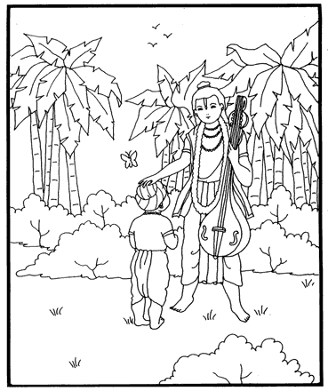 5) Al escuchar de su madre que sólo Narayan podría ayudarlo, el pequeño príncipe Dhruva decidió ir al bosque para encontrarlo, pues su madre le había dicho que allí lo buscaban los sabios. Al saber de esta temeraria decisión , Narada Muni fue a ver al niño, y al hacerlo, poso su virtuosa mano sobre su cabeza y le dijo: Dhruva, sólo tienes 5 años, y debes dedicarte a jugar, sin tomar en serio el reto de tu madrastra. Todo sucede de acuerdo a nuestro actos pasados, y todo, ya sea bueno o malo, viene por acuerdo del Señor. Por ello debes aprender a estar siempre satisfecho, pues así cruzarás muy fácil la oscura ilusión. 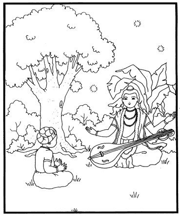 6) Al escuchar estas palabras del sabio Narada el pequeño Dhruva le dijo: Oh gran sabio hijo de Brahma, que viajas por los mundos tocando tu vina; perdona que no pueda yo apreciar tu buen concejo, pero no es mi culpa, pues por ser hijo de guerreros mi alma no tolera el recibir ningún insulto. Enséñame más bien el medio por el cual, podré alcanzar el trono más elevado, que supere al de Brahma y Manu, quien son mis antepasados. Entonces el sabio Narada lo instruyó en el proceso del servicio devocional y con mucha compasión le habló de la siguiente manera. 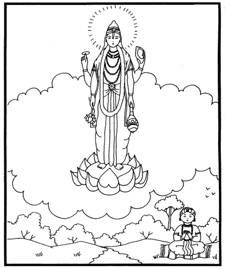 7) Por adorar a Dios uno recibe todo lo que espera, pues sólo Él satisface todos los deseos. Por ello te aconsejo que vayas a orillas del Yamuna, donde se encuentra el hermoso bosque Madhuvan; el Señor mismo vive allí y así lo tendrás más cerca. Báñate tres veces diarias en las sagradas aguas del río, controla tu mente y sentidos por la práctica de astanga-yoga, y medita en firme postura en el Señor. Él es muy bello y siempre disfruta al ver a Sus devotos. Él nunca se enoja con ellos. Su frente es ancha, Su nariz respingada, Su mirada colma de bendiciones a quienes se le aproximan. Él es un océano de misericordia. 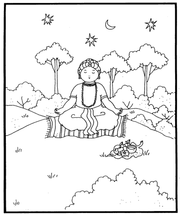 8) En Si pecho tiene la marca Srivatsa, que es el lugar de la Diosa de la fortuna; Su color es azul oscuro, tiene un casco dorado, una dulce sonrisa y una hermosa guirnalda. Tiene cuatro brazos y en ellos porta la caracola, el disco, el mazo y la flor de loto. Se decora con muchas joyas y Sus ropas son de color amarillo. Por meditar en esta forma trascendental de vas a purificar y para ello debes repetir el mantra sagrado <<om namo bhagavate vasudevaya.>> Debes adorar una forma de la deidad y ofrecerle frutas, flores y agua del río. 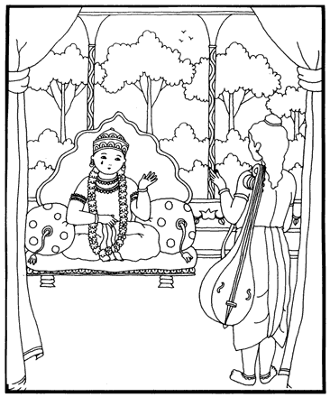 9) Al escuchar esta instrucción de Narada, Dhruva dio tres vueltas alrededor del sabio, y ofreciéndole reverencias se dirigió de inmediato al bosque Madhuvan. Mientras tanto Narada Muni quiso conocer la condición del rey Uttanapad y para ello se dirigió y su palacio. El rey estaba sentado en un trono muy afligido por haber ofendido a su pequeño hijo. Narada al verlo le preguntó: ¿Qué te pasa OH rey? Tu rostro está seco de tanto sufrir. ¿Te sucedió alguna desgracia?… De esta manera el sabio le preguntó como si nada supiese. 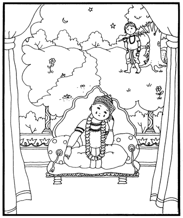 10) El rey muy triste le dijo: OH sabio! Por preferir a una mala mujer, he maltratado a mi bello hijo Dhruva y a su madre, quienes son tan buenos devotos. El rostro de mi niño es bello como una flor de loto; pero ahora el pobrecito debe andar por la selva padeciendo hambre y sed y debe estar cansado y débil, sino desmayado; o quizás los feroces lobos ya lo han devorado! Al escuchar la amarga lamentación del rey el sabio Narada le dijo: No te preocupes por tu hijo !oh rey!, pues él se encuentra protegido por el Señor; y su afamada gloria será conocida por el universo. El hará lo que ni grandes reyes ni yoguis han podido hacer; y pronto lo verás regresar a casa victorioso. 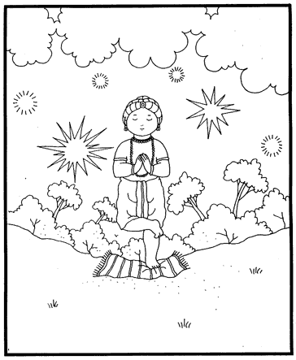 11) El padre de Dhruva perdió todo interés por su vasto reino y sólo se sentó para recordar a su hijo, quien en el bello bosque de Madhuvan practicaba severas penitencias. El primer mes, (una vez cada tres días) sólo comió frutas. El segundo mes comió cada seis días y sólo pasto y hojas secas. El tercer mes sólo bebió agua una vez cada nueve días y se mantuvo en trance recordando al Señor. En el cuarto mes respiró sólo una vez, cada doce días y en e quinto, se paró en un solo pie, conservando un perfecto control sobre su mente y cuerpo. La tierra se hundió bajo su poderoso peso, por estar tan unido al Señor; los devas en el cielo sintieron que perdían la respiración. 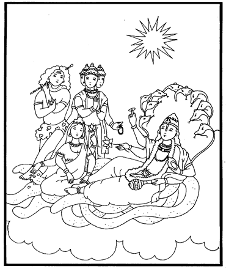 12) Así todos ellos fueron donde el Señor Visnu a pedirle protección y le oraron diciendo: !Oh Señor de los seres móviles e inmóviles ! !Sálvanos ! Nunca hemos sufrido algo igual, pues sentimos que no podemos respirar : Tú eres el refugió de las almas rendidas y por ello hemos acudido a Ti. El buen Señor les dijo: No se preocupen semidioses del cielo; esta situación ha sido causada por las grandes austeridades de Dhruva, el hijo del rey Uttanapad. Él ha bloqueado la respiración universal; pero ahora bajaré a la tierra para detener su austeridad. 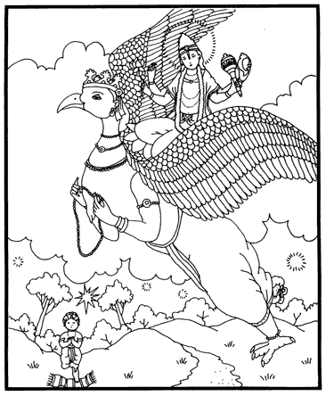 13) Al decir esto los devas volvieron alegres a sus planetas, y el Señor Visnu, montando en Su gran portador, el águila Garuda, bajó presuroso al bosque Madhuvan donde Dhruva meditaba. De pronto el niño se extraño de no poder ver la imagen de su Señor en el corazón, entonces abrió sus bellos ojos y con gran sorpresa vio, que el mismo Señor Visnu en quien meditaba, estaba ahora parado ante él sonriéndole en forma amorosa. 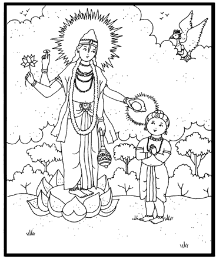 14) Dhruva, llorando de emoción beso Sus sagrados pies, y trató de orarle mas no pudo por ser sólo un niño; entonces el Señor toco su frente con su caracola, y de esa manera lo bendijo para que pudiera dirigirle un emotivo discurso. Dhruva dijo: ¡Oh Señor! Tu eres el amigo de los afligidos. ¿Cómo alguien inteligente podrá olvidarte? Las personas tontas esperan recibir de Ti placeres para el cuerpo, pero yo sólo te pido que me concedas la santa asociación de Tus devotos... 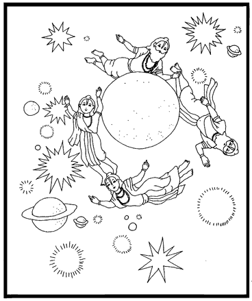 15) Al oír esta oración y muchas otras cosas sabias que dijo Dhruva, el Señor le respondió: Conozco hijo mío el deseo de tu corazón, y aunque guardas una ambición muy grande y difícil de complacer, satisfaceré tu deseo al darte la estrella Polar, que está rodeada por todos los planetas y sistemas, y es circunvalada por grandes sabios como Drama, Agni, Sukra y Kasyapa. Cuando tu padre renuncie al trono reinaras el mundo por treinta y seis mil años, y siempre permanecerás sano y sin envejecer. Podrás celebrar muchos sacrificios y dar caridades, así gozarás tanto en esta vida como después. Al dejar este cuerpo irás a Mi planeta, que se encuentra por encima de la morada de los siente risis, y una vez llegado allí, ya no volverás a nacer. 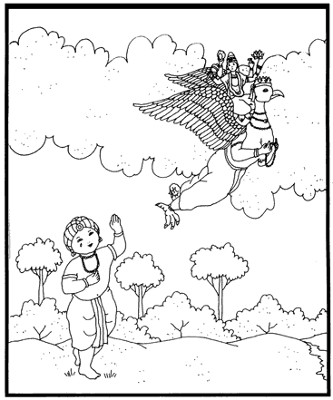 16) Tras decir esto el Señor Visnu se fue montado en Garuad, mientras Dhruva lo vio alejarse con triste mirada. Después de este maravilloso suceso el pequeño niño se lamentó diciendo: “A pesar de haber alcanzado en seis meses el refugió de Sus pies de loto, logro que para otros como Sananda tomó tantas vidas, perdí esa gracia por conservar una aspiración distinta a Él. ¡Qué desafortunado soy! Obtuve al Señor que acaba con el nacimiento y la muerte, pero sólo le oré por cosas de este mundo, que se desvanecen. Los devas envidiosos confundieron mi inteligencia; y por esta razón bajo la influencia de la ilusión, consideré a Uttama y a mí madrastra mis enemigos. Soy tan necio como el mendigo aquél que pidió al emperador un puñado de cereales partidos. 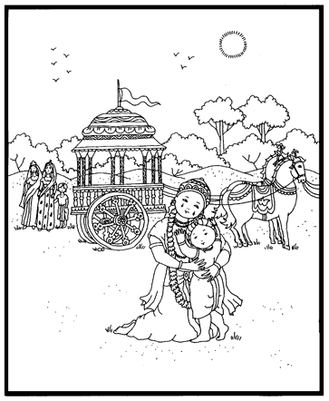 17) Cuando el rey Uttanapad escuchó del regreso de su hijo, le regalo su valioso collar al mensajero, y ordenó preparar su carro para salir a recibirlo. Él no se creía merecedor de tanta fortuna. Acompañado por sus reinas, sabios, ministros y consejeros, salió en medio de vibraciones de caracolas y tronar de cuernos. Al ver a su hijo bajó presuroso de su carro y lo abrazó muy fuerte contra su pecho; y mientras le olía a menudo la cabeza, lo mojaba con lágrimas de alegría. 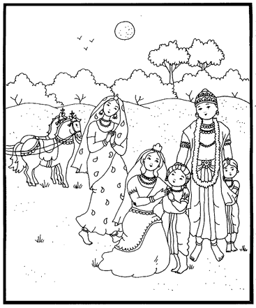 18) Dhruva había cambiado al realizar al Señor Visnu, y le ofreció sus reverencias a su padre y a sus dos madres. Cuando se postró ante Suruci ella no dudó en bajar de su palanquín para abrazarlo, y mientras lo mojaba con sus lágrimas le decía: ¡Querido niño, que tengas larga vida! También Dhruva y su hermano uttama se abrazaron, y al hacerlo sus vellos se erizaron. Suniti, la verdadera madre de Dhruva, no sólo lo baño con sus lágrimas, sino también con la leche que en forma espontánea brotó de sus pechos. 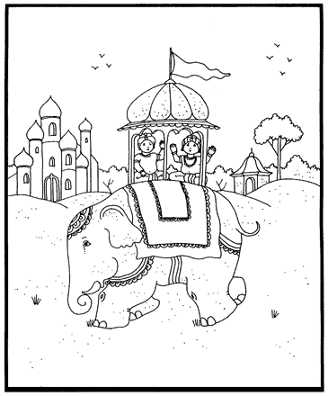 19) El rey hizo sentar a Dhruva y Uttama sobre un gran elefante y así regresaron a la importante capital. Ésta estaba rodeada por altas murallas de mármol, tenía muchos jardines y palacios, jarros colgantes arreglos de hojas y flores, y había agua perfumada rociada por doquier. Las azoteas se llenaron de madres afectuosas que ovacionaban el regreso del niño, y le salpicaban agua auspiciosa. Mientras escuchaba el alegre canto de estas damas, Dhruva entró en el opulento palacio de su padre. 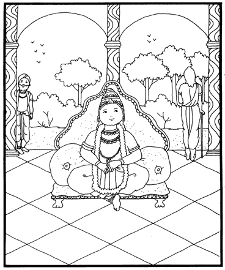 20) Años mas tarde, cuando el rey Uttanapad vio que su hijo Dhruva era querido por el pueblo, y que contaba con el respeto y afecto de sus ministros y consejeros, decidió entronarlo como el emperador de este planeta... Y al verse a sí mismo entrado en años y considerando la importancia del espíritu, con toda determinación se internó en el bosque; tras desapegarse de todo interés mundano. 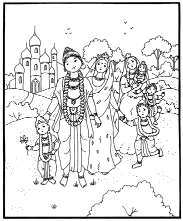 21) Druva comenzó a reinar como el mejor soberano, siguiendo el consejo de los Vedas, de los brahmanas, y el buen ejemplo de su padre. Más tarde se casó con Brahmi, la hija de prajapati Sisumara, y con ella tuvo dos bellos hijos llamdos Kalpa y Vatsara. También se cado con Illa, hija del semidiós Vayu; con ella tuvo un hijo llamado Utkala y una linda niñita. 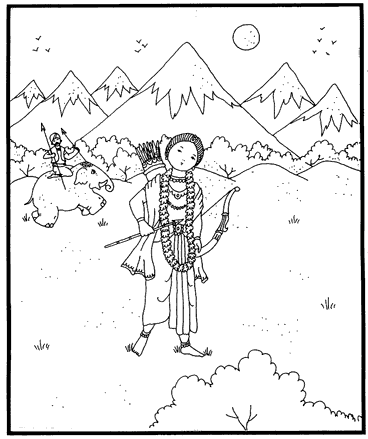 22) Su hermano Uttama, que aún estaba soltero, salió un día de caza y al internarse en el Himalaya, fue matado por un poderoso guerrero Yaksa. Su madre Suruci, al saber de su trágica muerte, salió a buscarlo pero murió en el bosque en medio de una gran incendio. 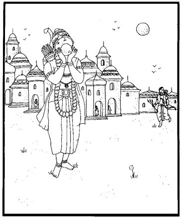 23) Dhruva, al saber de esto se enojó mucho y quiso vengar la muerte de su hermano. Por ello, fue hasta Alakapuri, la poderosa ciudad de los Yaksas, quienes eran grandes guerreros y adoradores del Señor Siva. Al llegar allí sopló su caracola en son de guerra y su estruendor causó miedo a las mujeres. Sus esposos salieron entonces furiosos a enfrentarlo con sus armas en alto. Dhruva, sin esperar ni un segundo, los atacó lanzando de a tres flechas y los Yaksas a su vez replicaron lanzando de a seis. Eran ciento treinta mil fuertes guerreros en contra suya, así al estar atacado de esta forma, parecía una montaña azotada por la lluvia. Los Siddhas en el cielo al ver esto exclamaron alarmados: ¡El nieto de Manu, Dhruva está perdido! 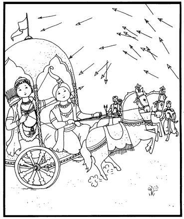 24) Los Yaksas ya cantaban victoria cuando de pronto, Dhruva emergió incólume en su carro, como aparece a veces el sol de en medio de las nubes. Lanzaba flechas con tanto valor y destreza, que mutiló por mil a sus fieros enemigos. Les cortó brazos piernas y cabezas, que estaban todas decoradas con cascos y turbantes. El ataque de Dhruva fue tan heroico y decidido, que el ejercito Yaksa se vio desarmado y emprendió la huida. Dhruva quiso entonces entrar en la capital de los Yaksas, pero luego decidió cuidarse de sus malévolos poderes místicos. 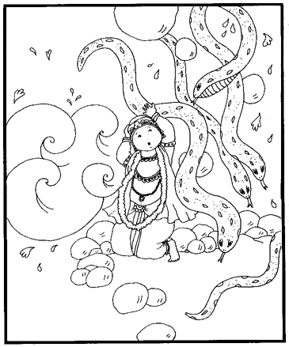 25) Cuando así pensaba y conversaba con su auriga, se sintió un pavoroso estruendo, como el de un gran torbellino. Dhruva vio que una gran ola de armas, cuerpos, serpientes, vómitos, se le venían encima. Luego apareció en el cielo una gran montaña, de donde caían enormes rocas, troncos y serpientes furiosas. También Dhruva vio el invencible océano acercándosele impetuoso. 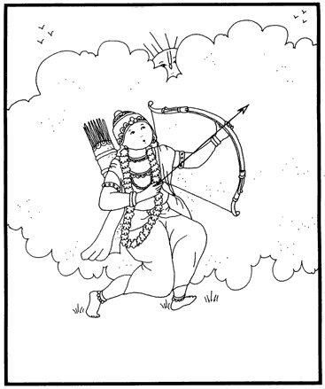 26) Entonces los sabios, que siempre observan y cuidan a los buenos, se aproximaron a Dhruva y le dijeron: Que el Señor, quien protege a Sus devotos, destruya a tus enemigos. Su Santo Nombre es tan poderoso como Él mismo, por ello Sus devotos al cantarlo, se liberan de la muerte. Animado así por las palabras de los sadhus, el rey tomó una flecha dada por Narayan y apenas la puso en su arco, desapareció la ilusión con la que lo atacaban; tal como el placer y la pena material se desvanecen, cuando uno realiza el alma. 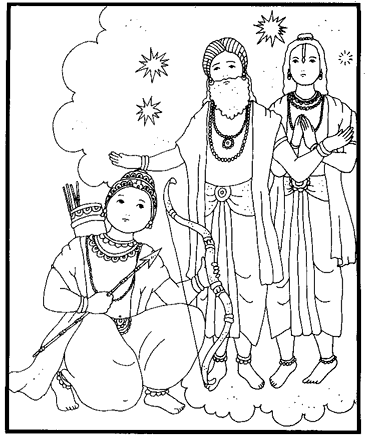 27) Por segunda vez Dhruva atacó a sus enemigos con silbantes flechas, con las que hirió a miles de ellos causándoles la muerte. Estos Yaksas al morir eran enviados a un planeta más arriba del sol, donde llegan quienes han sido brahmacaris consumados. Al ver esta masacre Svayambhuva Manu sintió compasión, y rodeado por sabios se acerco a su nieto para aconsejarlo y le dijo: Hijo mío, detente, pues el enojo conduce al infierno; por el error de un yaksa ya has matado a miles de ellos que eran inocentes. Tú eres un devoto puro y estás destinado a volver a Dios; por ello no olvides que el Señor se complace cuando sus sirvientes son tolerantes y misericordiosos. 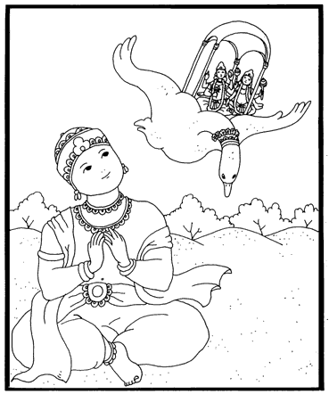 28) Dhruva se tranquilizó al escuchar a su abuelo, y luego Kuvera también vino a darle instrucciones. Después de esto reinó por muchos años, hasta que decidió retirarse a Badarikasrama, donde se baño tres veces al día y meditó en trance extático. Un día en que así meditaba, bajó una nave del cielo con dos personas muy hermosas que los invitaron a subir a ella. Ellos eran Nanda y Sunanda, tenían cuatro brazos, mazas, guirnaldas y bellos adornos. Al ver que eran sirvientes del Señor, el rey no dudo en seguirlos. 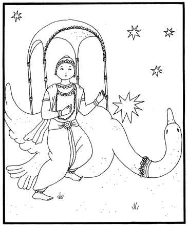 29) Antes de subir al aeroplano hizo sus ritos diarios y se despidió pidiendo la bendición de los sabios. Luego circunvalo tres veces la divina nave enviada por Narayan, y subió a ella pisando la cabeza de la muerte personificada que en ese momento ante él se inclinaba. Esta nave era tan grande como una casa. 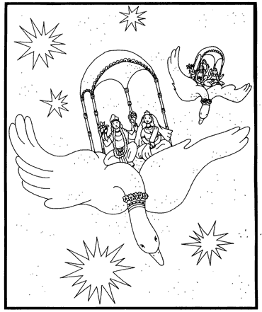 30) Cuando Nanda y Sunanda iniciaron el vuelo sonaron instrumentos en el cielo y se escuchó el canto de los Gandharvas. Pero la gran alma Dhruva Maharaj pensó: ¿Cómo puedo irme yo solo al planeta Vaikunta, dejando atrás a mi pobre madre? Los sirvientes de Visnu entendieron su pensamiento y sonriendo le mostraron otra nave que iba delante de ellos, y en ella vio que iba volando su buena madre Suniti! 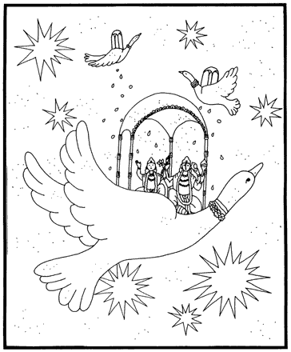 31) Mientras Dhruva pasaba por cada planeta, los semidioses le llovían flores desde sus naves, y tras sobrevolar los siete mundos sistemas de los siete sabios o saptarisis, llego a su hogar en Vaikuntha. Esta morada trascendental sólo puede ser alcanzada por aquellos que siempre se dedican a hacer el bien a los otros, que son buenos, puros, limpios y misericordiosos. Todo aquél que con fe y atención escuche esta bella historia de Dhruva Maharaj, podrá volverse un alma tan grande como él, y estará por siempre en casa con los devotos, y junto al Supremo y amoroso Señor. Hari Bolo! |